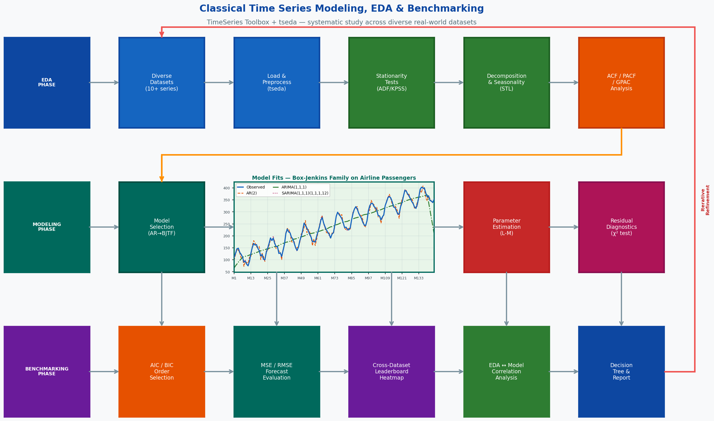

The goal of this project is to conduct a rigorous, reproducible study of classical time series
modeling and exploratory data analysis (EDA) across a diverse collection of real-world datasets,
using two in-house GWU libraries: the TimeSeries Toolbox
(https://amir-jafari.github.io/TimeSeries/) and the Time-Series-EDA library tseda
(https://amir-jafari.github.io/Time-Series-EDA/).
Key Objectives:
1. Apply the tseda library to perform systematic EDA on a broad set of time series datasets
spanning different domains (economic, industrial, meteorological, energy, financial).
EDA includes: stationarity testing (ADF, KPSS, Phillips-Perron), decomposition (classical
and STL), seasonality detection, outlier identification, and forecastability scoring.
2. Use the TimeSeries Toolbox to fit and validate the full Box-Jenkins family of classical
models — AR, MA, ARMA, ARIMA, Seasonal ARIMA, ARX, ARMAX, and Box-Jenkins Transfer
Function (BJTF) — on each dataset following the four-step system-identification workflow:
model class selection → order determination (ACF/PACF/GPAC) → parameter estimation
(Levenberg–Marquardt) → residual diagnostics (chi-square test, ACF of residuals).
3. Build a structured benchmarking framework that compares all fitted models within and
across datasets using AIC, BIC, and one-step-ahead MSE, producing ranked leaderboards
and diagnostic summary tables.
4. Identify which classical model families work best for which data characteristics
(trend, seasonality strength, noise level, forecastability score) and document
practical model-selection guidelines.
5. Package the full pipeline — EDA, modeling, and benchmarking — as a reusable open-source
Python framework with Jupyter notebooks and automated HTML reports.

Figure 1: Caption All datasets listed below are publicly available with no access restrictions.
The project targets a minimum of 10 diverse time series datasets to enable meaningful
cross-domain benchmarking.
BUILT-IN BENCHMARK SERIES (included in TimeSeries Toolbox):
1. Box-Jenkins Series A — Chemical process concentration (197 obs, univariate)
2. Box-Jenkins Series C — Chemical process temperature (226 obs, univariate)
3. Box-Jenkins Series G — Airline passengers (144 obs, monthly, strong trend + seasonality)
4. Box-Jenkins Series J — Gas furnace input-output (296 obs, bivariate transfer function)
ADDITIONAL PUBLIC DATASETS:
5. M4 Competition Subset:
- Yearly, quarterly, monthly, weekly, daily, hourly subsets
- Download: https://github.com/Mcompetitions/M4-methods/tree/master/Dataset
- Covers economic, finance, demographic, industry, micro, macro categories
6. ETT (Electricity Transformer Temperature):
- ETTh1, ETTh2 (hourly), ETTm1, ETTm2 (15-min), 7 features, ~17,420 obs each
- Download: https://github.com/zhouhaoyi/ETDataset
7. Air Quality (UCI):
- Hourly air pollutant readings, Italy, 9,357 obs, multivariate
- Download: https://archive.ics.uci.edu/ml/datasets/Air+Quality
8. Daily Climate Data (Kaggle):
- Daily temperature, humidity, wind speed — Delhi 2013-2017
- Download: https://www.kaggle.com/datasets/sumanthvrao/daily-climate-time-series-data
9. Sunspot Number (SILSO):
- Monthly sunspot counts 1749-present; classic benchmark for cyclical series
- Download: https://www.sidc.be/silso/datafiles
10. Global Energy Consumption (Our World in Data):
- Annual energy use per country, 1965-2022
- Download: https://github.com/owid/energy-data
DATASET PREPARATION:
- Standardize all series to a common pandas DataFrame/Series format with DatetimeIndex
- Record: length, frequency, domain, trend presence, seasonality period, missing-value rate
- Apply tseda forecastability scoring to rank datasets by modeling difficulty
- Document all preprocessing steps (log transform, differencing) in a reproducible notebook
Despite the rise of deep learning for forecasting, classical time series models remain
highly relevant for several reasons:
- They are interpretable: model coefficients directly encode lag dependencies and seasonal
structure, making them auditable for regulatory or scientific use.
- They are data-efficient: classical models are effective on short series (< 500 observations)
where deep models overfit.
- They are strong baselines: the M4 and M5 competitions showed that simple classical methods
(ES, ARIMA, Theta) beat most complex deep models on average.
- They are fast: fitting and cross-validating hundreds of models across many datasets is
computationally feasible without GPUs.
Yet there is no comprehensive, reproducible benchmarking study that:
(a) applies the full Box-Jenkins family systematically across many heterogeneous datasets,
(b) integrates rigorous EDA (stationarity, decomposition, forecastability) as a pre-modeling step, and
(c) connects EDA findings to model selection outcomes.
This project fills that gap using two in-house GWU libraries:
- TimeSeries Toolbox: implements the complete Box-Jenkins system-identification pipeline
with model comparison via AIC/BIC/MSE.
- tseda (Time-Series-EDA): provides automated EDA, decomposition, stationarity testing,
seasonality detection, and forecastability scoring.
WHY THIS PROJECT IS TIMELY AND PUBLISHABLE:
- Reproducible benchmarking papers are highly cited in the forecasting community.
- A well-designed benchmark can serve as the empirical foundation for future deep-learning
comparison studies (e.g., "classical methods vs. Transformers on diverse datasets").
- Both libraries are in-house GWU artifacts; students can contribute modules and co-author
the resulting paper.
- Practical guidelines ("which classical model for which data type") benefit forecasting
practitioners in industry, government, and academia.
PHASE 1: ENVIRONMENT SETUP & DATASET COLLECTION (Weeks 1-2)
[Week 1: Setup & Library Exploration]
- Install and explore both libraries: pip install tseda, clone TimeSeries Toolbox
- Run provided tutorials end-to-end (Box-Jenkins Series A, C, G, J)
- Set up project directory structure: data/, eda/, models/, benchmarks/, notebooks/
- Download all 10+ target datasets; convert to pandas DatetimeIndex Series format
- Create a dataset_registry.csv cataloguing: name, domain, frequency, length,
# variables, source URL, preprocessing notes
[Week 2: Data Preprocessing & tseda Pipeline]
- Write a standardized loader for each dataset (handles missing values, resampling)
- Run tseda on every dataset: descriptive stats, missing-value report, outlier flags
- Record stationarity test results (ADF, KPSS, Phillips-Perron) for each series
- Apply differencing/log-transform as needed; re-test until stationarity is achieved
- Compute tseda forecastability scores; rank datasets from easiest to hardest
PHASE 2: EDA DEEP DIVE (Weeks 3-4)
[Week 3: Decomposition & Seasonality]
- Apply classical decomposition (additive and multiplicative) and STL to all datasets
- Extract trend strength and seasonal strength metrics from tseda
- Identify dominant seasonal periods using periodogram + Fisher's G-statistic
- Generate tseda automated HTML reports for each dataset
[Week 4: Correlation & Feature Extraction]
- Compute ACF and PACF with significance bands for all series (post-differencing)
- Compute GPAC (Generalized Partial Autocorrelation) tables using TimeSeries Toolbox
- Use GPAC patterns to hypothesize candidate ARMA orders (p, q) for each series
- Extract tseda spectral and statistical features for later correlation with model performance
- Produce a cross-dataset EDA summary table
PHASE 3: CLASSICAL MODEL FITTING (Weeks 5-9)
[Week 5: AR / MA / ARMA Models]
- For each dataset: fit AR(p), MA(q), and ARMA(p,q) models across a grid of orders
- Use AIC/BIC to select best order within each model class
- Validate with chi-square residual test and ACF of residuals (white-noise check)
- Record: fitted coefficients, AIC, BIC, one-step-ahead MSE on hold-out set
[Week 6: ARIMA & Seasonal ARIMA]
- Extend to ARIMA(p,d,q) — determine d from stationarity tests
- Fit SARIMA(p,d,q)(P,D,Q,s) for datasets with confirmed seasonality
- Apply automatic order search using AIC/BIC grid (Box-Jenkins approach)
- Compare ARIMA vs. SARIMA for seasonal datasets; document seasonal improvement
[Week 7: Transfer Function Models (ARX / ARMAX / BJTF)]
- Apply to datasets with exogenous inputs (Gas Furnace Series J, multivariate datasets)
- Fit ARX(na, nb), ARMAX(na, nb, nc), and BJTF models
- Compare one-step-ahead MSE against univariate ARIMA baselines
- Visualize impulse responses and pole-zero maps for fitted transfer functions
[Week 8: Model Diagnostics & Validation]
- Run full residual analysis for every fitted model: ACF of residuals, chi-square test,
Q-Q plot, histogram of residuals
- Flag models failing diagnostics as "invalid" and exclude from benchmarking
- Document common failure modes: order under-fitting, seasonal misspecification
[Week 9: Cross-Validation & Forecast Evaluation]
- Implement rolling-origin (walk-forward) cross-validation: train on first k observations,
forecast h steps ahead, advance by one step
- Horizons: h = 1, 5, 10, 20 steps ahead
- Compute RMSE, MAE, MAPE, and SMAPE for each model × dataset × horizon combination
- Store all results in a structured benchmarking DataFrame
PHASE 4: BENCHMARKING & ANALYSIS (Weeks 10-12)
[Week 10: Within-Dataset Leaderboard]
- For each dataset, produce a ranked leaderboard of all valid models by AIC, BIC, MSE
- Identify best model per dataset; document the winning model class and its order
- Produce diagnostic comparison plots: ACF of residuals, forecast vs. actual overlays
[Week 11: Cross-Dataset Analysis]
- Aggregate results across all datasets; compute average rank per model class
- Correlate model class performance with tseda EDA features:
* Does seasonal strength predict whether SARIMA outperforms ARIMA?
* Does forecastability score predict achievable MSE?
* Do GPAC-suggested orders match AIC-optimal orders?
- Produce heatmaps: datasets (rows) × model classes (cols) × metric (color)
[Week 12: Practical Guidelines & Visualizations]
- Write a model-selection decision tree based on EDA findings
- Produce all final figures: benchmark heatmaps, forecast overlays, EDA-to-model correlation plots
- Summarize findings: which model family works best for trend-only, seasonal, noisy, short series
PHASE 5: PAPER WRITING & CODE RELEASE (Weeks 13-14)
[Week 13: Research Paper Draft]
Paper structure (8-10 pages, IJF / AAAI workshop format):
1. Abstract: motivation, libraries used, datasets, key findings
2. Introduction: gap in reproducible classical benchmarking
3. Libraries: TimeSeries Toolbox and tseda descriptions
4. Datasets: registry table with EDA summary statistics
5. Methodology: EDA → model fitting → cross-validation → benchmarking pipeline
6. Results: leaderboard tables, cross-dataset heatmaps, EDA-performance correlations
7. Practical Guidelines: model-selection decision tree
8. Conclusion & Future Work: extension to deep learning baselines
[Week 14: Code Release & Documentation]
- GitHub repository: eda/, models/, benchmarks/, notebooks/ structure
- Automated benchmarking script: run_benchmark.py --dataset all --models all
- Jupyter notebooks: one per dataset and one summary benchmarking notebook
- README with quickstart, dataset download instructions, reproduction commands
- Requirements.txt with pinned dependencies
Week 1: Library setup, dataset download, dataset_registry.csv, tutorial run-throughs
Week 2: Standardized data loaders, tseda EDA on all datasets, forecastability scoring
Week 3: Decomposition (classical + STL), seasonal strength, tseda HTML reports
Week 4: ACF/PACF/GPAC for all datasets; candidate order hypotheses documented
Week 5: AR / MA / ARMA grid fitting across all datasets; AIC/BIC order selection
Week 6: ARIMA and Seasonal ARIMA fitting; seasonal improvement documented
Week 7: ARX / ARMAX / BJTF on multivariate datasets; impulse response analysis
Week 8: Full residual diagnostics; flag invalid models; chi-square validation
Week 9: Rolling-origin cross-validation (h=1,5,10,20); RMSE/MAE/MAPE/SMAPE tables
Week 10: Per-dataset leaderboard; best-model identification; forecast overlay plots
Week 11: Cross-dataset analysis; EDA feature vs. model performance correlations
Week 12: Decision tree guidelines; all final figures and benchmark heatmaps
Week 13: Research paper draft (IJF / AAAI workshop format)
Week 14: Code release, README, Jupyter notebooks, final presentation
TOTAL: 14 weeks (one semester)
KEY MILESTONES:
- Week 2: All datasets loaded and EDA complete
- Week 4: GPAC / ACF / PACF analysis done; order hypotheses documented
- Week 6: ARIMA / SARIMA fitting complete across all datasets
- Week 9: All cross-validation results in structured benchmarking DataFrame
- Week 11: Cross-dataset analysis and EDA-performance correlations complete
- Week 12: All figures and tables finalized
- Week 14: Paper submitted; code released on GitHub
DELIVERABLES BY WEEK 14:
- Standardized EDA pipeline using tseda (reusable across any time series)
- Complete model fitting pipeline using TimeSeries Toolbox (AR through BJTF)
- Benchmarking framework with rolling-origin CV, leaderboards, and heatmaps
- Model-selection decision tree based on EDA findings
- Research paper draft (8-10 pages)
- GitHub repository with automated benchmarking script and notebooks
RECOMMENDED: 2-3 students
ROLE DISTRIBUTION FOR 2 STUDENTS:
Student 1: EDA & Data Engineering
- Responsibilities: Dataset collection, standardized loaders, tseda EDA pipeline,
stationarity testing, decomposition, seasonality analysis, forecastability scoring,
HTML report generation, dataset_registry.csv maintenance
- Skills: pandas, tseda, statsmodels, time series fundamentals
Student 2: Classical Modeling & Benchmarking
- Responsibilities: TimeSeries Toolbox fitting (AR/MA/ARMA/ARIMA/SARIMA/ARX/ARMAX/BJTF),
GPAC/ACF/PACF order identification, residual diagnostics, rolling-origin cross-validation,
leaderboard construction, cross-dataset correlation analysis, benchmark heatmaps
- Skills: TimeSeries Toolbox, classical statistics, Box-Jenkins methodology
SHARED RESPONSIBILITIES (both students):
- Paper writing, decision tree guidelines, code documentation, final presentation
- Weekly integration meetings: EDA findings (Student 1) inform model order choices (Student 2)
FOR 3 STUDENTS (optional third role):
Student 3: Visualization, Analysis & Writing
- Responsibilities: Produce all publication-quality figures (heatmaps, forecast overlays,
EDA-performance correlation plots), write research paper, manage GitHub repository,
run additional datasets to expand benchmark coverage
TECHNICAL CHALLENGES AND SOLUTIONS:
1. Non-Stationarity:
- ISSUE: Many real-world series require multiple rounds of differencing; over-differencing
introduces unit roots in the MA component
- SOLUTION: Use ADF + KPSS jointly (both must agree); apply at most d=2; verify
stationarity of differenced series before fitting
2. GPAC Order Identification:
- ISSUE: GPAC tables can be ambiguous for mixed ARMA processes or near-unit-root series
- SOLUTION: Cross-reference GPAC with AIC/BIC grid search; flag ambiguous cases and
fit multiple candidate orders, reporting the best by AIC
3. Transfer Function Model Identification (ARX/ARMAX/BJTF):
- ISSUE: Requires exogenous input alignment; input-output delay must be correctly identified
- SOLUTION: Use cross-correlation function (CCF) to identify delay; consult TimeSeries
Toolbox pole-zero analysis for structural validation
4. Convergence of Levenberg–Marquardt Optimization:
- ISSUE: For high-order models, the L-M optimizer may converge to local optima or diverge
- SOLUTION: Try multiple initializations; bound parameters to stationary/invertible regions;
reduce model order if convergence fails
5. Short Series & Overfitting:
- ISSUE: Fitting high-order models on short series (< 100 obs) leads to unreliable estimates
- SOLUTION: Apply maximum order constraint (p+q ≤ N/10); use BIC (stronger penalty than AIC)
for order selection on short series
6. Rolling-Origin CV Runtime:
- ISSUE: Fitting hundreds of models × 10+ datasets × multiple horizons is time-intensive
- SOLUTION: Parallelize using Python multiprocessing; cache fitted model objects;
run overnight on GWU HPC cluster if needed
7. Inconsistent Dataset Frequencies:
- ISSUE: Mixing hourly, daily, monthly series requires careful handling in benchmarking tables
- SOLUTION: Report metrics separately by frequency group; never mix frequencies in the same
leaderboard rank
RISK MITIGATION TIMELINE:
- Weeks 1-2: Verify stationarity pipeline is correct on known datasets (Airline, AirQuality)
- Weeks 3-4: Confirm GPAC patterns match known ARMA orders for Box-Jenkins tutorial series
- Weeks 5-6: Spot-check 3 datasets manually to validate automated ARIMA fitting results
- Weeks 7-8: Verify residual diagnostics flag models that clearly do not fit
- Weeks 9-10: Cross-check CV results against statsmodels ARIMA as an independent reference
- Weeks 11-12: Have both students verify cross-dataset numbers independently before paper
- Weeks 13-14: 3-day code freeze for README and notebook review before GitHub release